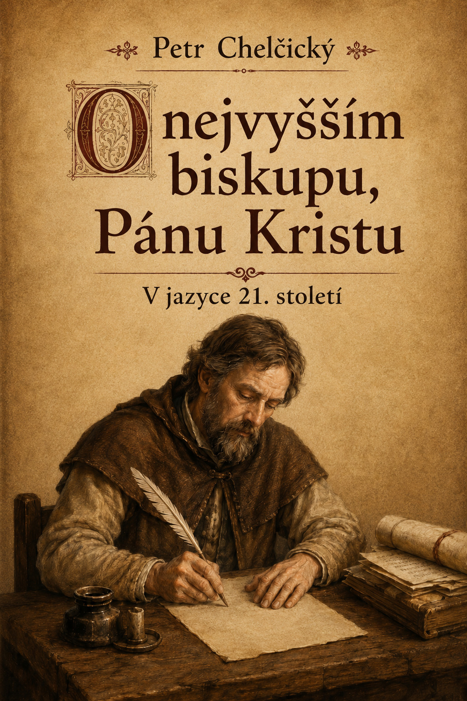

Přejít k obsahu
Domů
›
Traktáty
›
O nejvyšším biskupu, Pánu Kristu
vcelkakorektorka.cz
Digitální edice
Úvod
Traktát
Ediční poznámka
Doslov
Tiráž
O nejvyšším biskupu, Pánu Kristu

Začít číst
Přejít k traktátu
↓ Stáhnout EPUB
↓ Stáhnout PDF